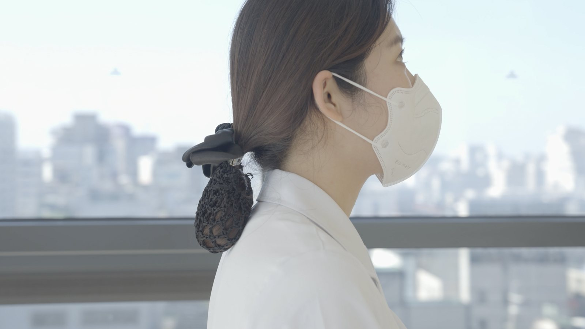
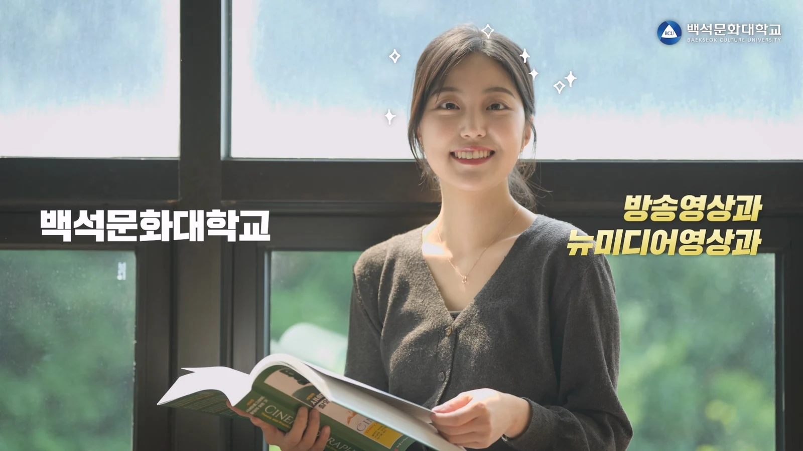
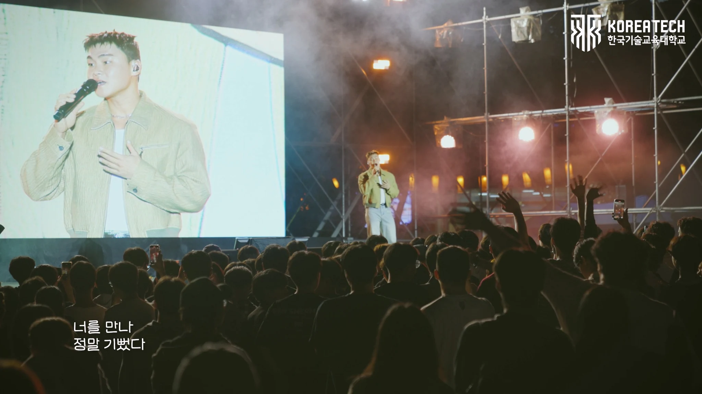

데이터로 주제를 고릅니다.
같은 분야에서 실제로 조회수가 나온 영상과 채널을 분석해,
시청자가 이미 찾고 있는 주제부터 정합니다.

역할 · 촬영 · 편집
진료 때문에 촬영 시간이 부족한 병원의 유튜브를 맡아 롱폼 20편과 숏폼 50편을 촬영·편집했습니다. 기획은 원장님이 직접 하셨고, 저는 촬영과 편집을 맡았습니다. 촬영 장소를 스튜디오에서 병원 현장으로 옮겨 원장님이 따로 이동할 필요가 없게 했고, 병원의 실제 모습도 함께 담았습니다. 카메라 2대와 프롬프터를 써서 한 번 촬영으로 롱폼 4편과 숏폼 8편을 만들었습니다.

4 + 8
한 번 촬영하면 롱폼 4편, 숏폼 8편.
스튜디오 촬영을 병원 현장 촬영으로 바꾸고,
카메라 2대와 프롬프터를 세팅해
한 번의 촬영에서 롱폼 4편과 숏폼 8편이 나오도록 했습니다.
잘 찍은 영상도 아무도 보지 않으면 소용없습니다.
촬영 전에 무엇을, 어떤 순서로, 누구에게 보여줄지부터
함께 정합니다.
직접 유튜브 채널도 운영합니다.
같은 분야에서 실제로 조회수가 나온 영상과 채널을 분석해,
시청자가 이미 찾고 있는 주제부터 정합니다.
촬영 전에 제목 · 썸네일 문구와 첫 장면을 정하고,
영상이 그 약속을 끝까지 채우도록 원고를 구성합니다.

백석문화대학교 미디어영상학부.
학과의 분위기와 전공의 매력을 예비 신입생에게 보여줍니다.

객실과 공간의 분위기를 영상으로 소개합니다.
드론과 조명으로 공간의 첫인상을 만듭니다.

한국기술교육대학교 축제.
무대의 공연과 객석의 반응을 함께 기록했습니다.

어쿠스틱 퍼포먼스의 감정과 리듬을 화면으로 옮겼습니다.

인물과 현장의 시간을 오래 관찰하고 기록했습니다.